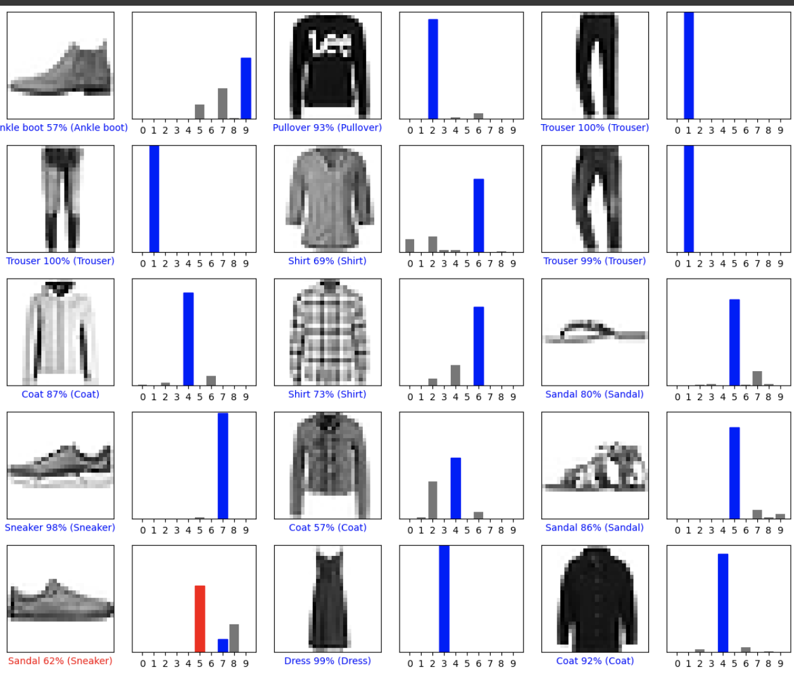
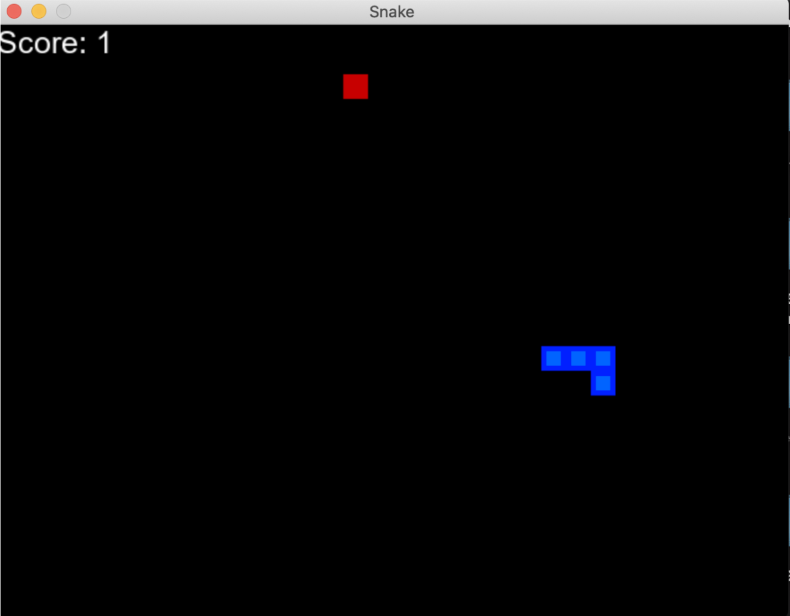
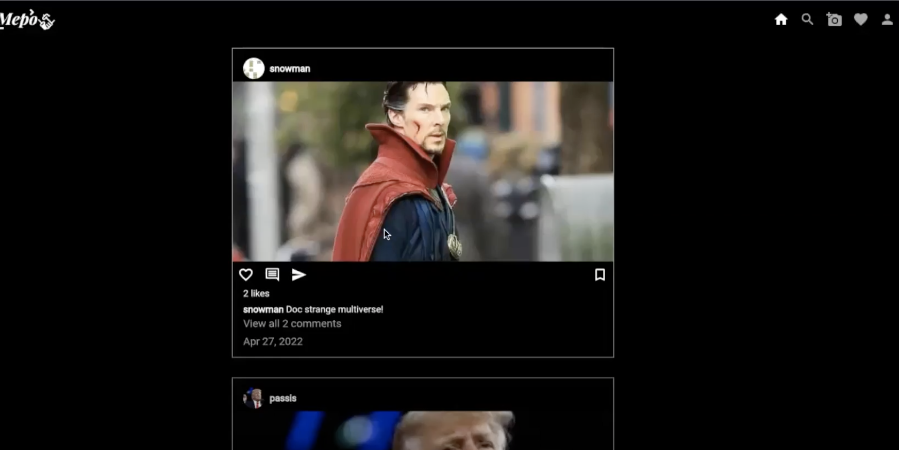

Experience
Operations Engineer
AgMonitor
Aug 2025 – Present · California
Oversee data quality and operational reporting for ~3,400 agricultural pumps and 300 solar sites across 100+ customers. Independently manage customer accounts and diagnose complex platform issues. Coordinate mobile app delivery, conduct in-field training, and build internal tools using Python and vendor APIs. Analyze electricity tariffs, pumping performance, and irrigation costs to support reporting and cost-saving recommendations.
Software Testing Engineer
AgMonitor
Nov 2023 – Jul 2025 · California
Executed functional and regression testing across agricultural monitoring software. Identified reproducible defects and verified fixes with engineering and product teams. Validated customer-facing workflows, data presentation, and reporting accuracy to support release readiness.
Global Technology Software Engineer
Bank of America
Jul 2022 – Nov 2023 · Dallas, TX
Collaborated with product owners and stakeholders to translate requirements into Workday HCM improvements. Participated in agile sprints, maintained functional documentation, and supported configuration and release-related troubleshooting.
Technology Lead
DISCOVRe, Fresno State
Jan 2021 – Jun 2022 · Fresno, CA
Helped launch a campus-wide technology initiative supporting thousands of students and faculty. Managed a ticketing system and coordinated device deployment, support, and technical troubleshooting across the program.
IT Help Desk Intern
Grower Direct Nut Co.
Summers 2018 – 2020 · Hughson, CA
Provided IT support, tested RFID software, and configured employee devices and network access.
Skills
Technology
Delivery & Operations
Industry Domain
Education
Projects
Local AI Agent
Personal Project
Building a self-hosted AI agent stack at home with both local and remote LLM support. Uses Ollama to run models locally, Open WebUI as the chat interface, and N8N to orchestrate workflows and automation flows between services.
This Portfolio Site
Personal Project
Built and maintain this site to document my work and practice web development. Recently redesigned with modern CSS and updated content.
Python Remote Job Site Scanner
Personal Project
Web scraper built with Python and Beautiful Soup to automate job listing searches across multiple sites.
Fashion MNIST Classifier
CSci 166 — AI
Trained a neural network for image classification on clothing using the Fashion MNIST dataset.

Snake Game with Reinforcement Learning
CSci 166 — AI
Reinforcement learning agent that trains itself to play Snake. Implemented the action space, state representation, and reward function.

One-Way Tunnel Simulator
CSci 144 — Operating Systems
Single-lane tunnel simulation in C++ using multithreading to manage traffic flow dynamically based on direction and car count.

Shortest Path Game
CSci 115 — Data Structures
C++ project with custom characters, dynamic terrain generation, and shortest path algorithm adapted per terrain type.

Rumii — Bill Splitting Web App
CSci 150 — Software Engineering I
Web app for splitting household bills. Led all front-end development for the team project.

Mepo — Social Memory App
CSci 152 — Software Engineering II
Social media web app for sharing memories and blogs, organized into albums for followers.
